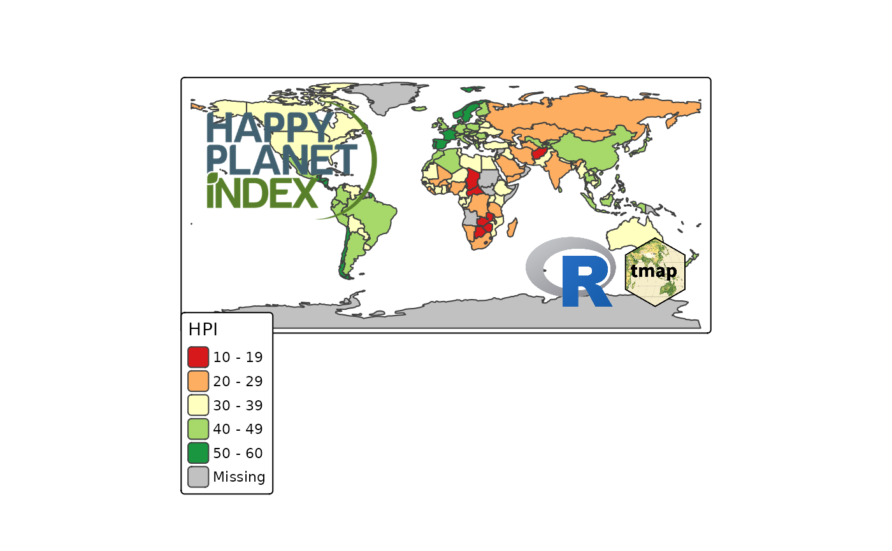

Map component that adds a scale bar. As of version 4.0, tm_scalebar() is
used instead of tm_scale_bar() (now deprecated), because of the potential
confusion with the tm_scale_*() scaling functions (like tm_scale_continuous()).
Usage
tm_logo(
file,
height,
margins,
between.margin,
stack,
position,
frame,
frame.lwd,
frame.r,
group.frame,
resize.as.group,
z
)Arguments
- file
either a filename or url of a png image. If multiple files/urls are provided with a character vector, the logos are placed near each other. To specify logos for small multiples use a list of character values/vectors. In order to stack logos vertically, multiple
tm_logoelements can be stacked.- height
height of the logo in number of text line heights. The width is scaled based the height and the aspect ratio of the logo. If multiple logos are specified by a vector or list, the heights can be specified accordingly.
- margins
margins
- between.margin
between.margin
- stack
stack
- position
position
- frame
frame
- frame.lwd
frame.lwd
- frame.r
frame.r
- group.frame
group.frame
- resize.as.group
resize.as.group
- z
z
Examples
data(World)
tm_shape(World) +
tm_polygons("HPI", fill.scale = tm_scale_intervals(values = "RdYlGn")) +
tm_logo(c("https://www.r-project.org/logo/Rlogo.png",
system.file("img/tmap.png", package="tmap"))) +
tm_logo("http://blog.kulikulifoods.com/wp-content/uploads/2014/10/logo.png",
height=5, position = c("left", "top")) +
tm_format("World")
#> [cols4all] color palettes: use palettes from the R package cols4all. Run 'cols4all::c4a_gui()' to explore them. The old palette name "RdYlGn" is named "rd_yl_gn" (in long format "brewer.rd_yl_gn")
#> Multiple palettes called "rd_yl_gn" found: "brewer.rd_yl_gn", "matplotlib.rd_yl_gn". The first one, "brewer.rd_yl_gn", is returned.
